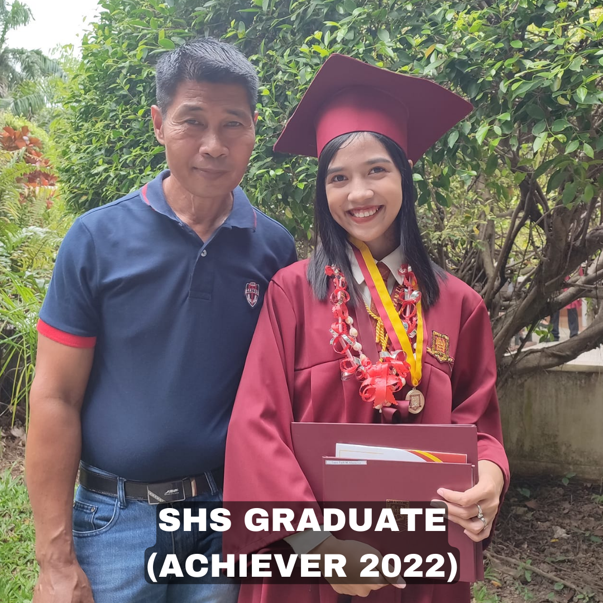
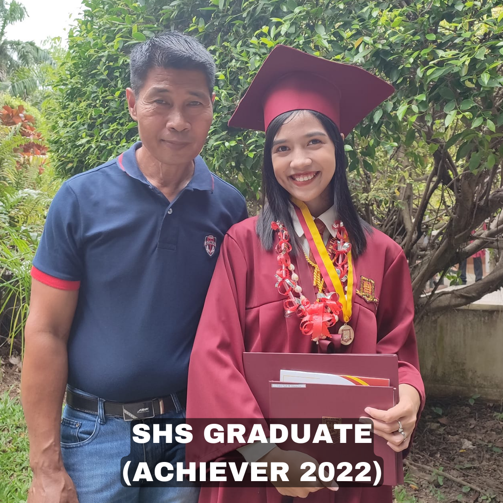

ABOUT ME
.png)
GRACE FAITH ABANACION
I am Grace Faith M. Abanacion, 18 years old and I was born on November 30, 2003 in Jr Borja City Hospital, Philippines. I live in zone 6 Pamalihi Pagatpat Cagayan de Oro City, Philippines. I love watching kdrama and hanging out with my friends. I have 2 sisters, I m the second daughter and I live with my family. My favorite food is chicken adobo, especially when I m eating it together with my family. I love listening to elevation music, one of my favorite albums is Lion. I was raised in a God-centered family. My father is a pastor and my mother was once part of the worship team, because of that I m always grateful for being part of this family. I grew up in a family that had a vision for me to build my faith in the Lord. Until I understand my calling and become part of the ministry, I become a leader and also a part of the worship team. It is not easy at all since people expect me to be patient and kind all the time as if I don t sin. Yet by God s grace I m still able to enjoy the abundance of life despite the fact that people in this world don t seem to agree with me.
.jpg) 
